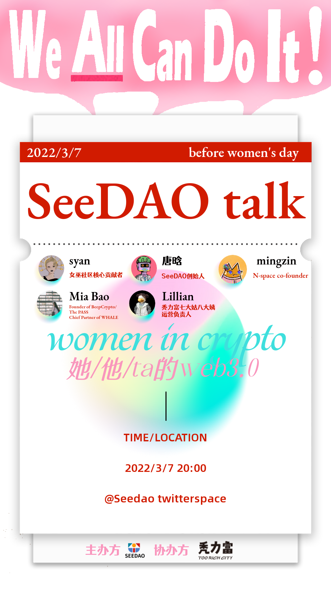
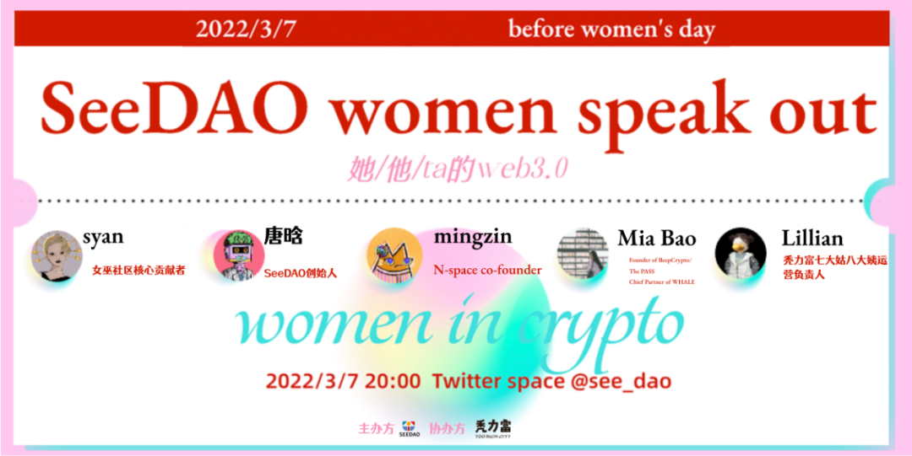

■ 3.7 SeeDAO Women speak out 对谈
作为华人社区由女性创始的、最大的DAO组织，SeeDAO成员们也在不断关注和讨论这些具有社会及文化价值的重要议题。正值妇女节来临之际，SeeDAO筹划了一次平等共创的对谈，旨在看到这些可敬可亲的女性，探索web3.0世界中女性的存在方式、发展状态，展现其独特的力量。
我们的世界中不乏那些可敬的女性——我们可以在波伏娃的哲学著作中找到她们，我们可以在反对战争活动的一线找到她们，我们可以在反对拐卖、维护权益的实践中找到她们，我们还可以在职场、运动场、影视作品，以及最前沿的Web3世界建设的探索中找到她们……
事实上，女性主义不仅存在于女性，她已经存在于每个人的生活；女性主义不仅是一种传统话语的“主义”，她还同样塑造着一个全新的未来。

越来越多的女性在涌入和建设Web3世界。这里我们可以看到，女性设计了BAYC这样影响力空前的NFT项目，女性管理者参与和建设以太坊的底层基础设施，女性成立自己的DAO，发起自己的项目，发行各种打破传统审美偏见的NFT，她们在用种种不可忽视的创新，宣告着自己的存在。而正是Web3的去中心化组织形式，赋予了这些努力更多的可能。
鲁迅曾问出“娜拉走后怎样”这样振聋发聩的女性问题。同时，李银河说：“女性主义的理论千头万绪，归根结底就是一句话：在全人类实现男女平等。”
那么，如今女性在web3是怎样的生存境遇？web3又为女性的独立提供了哪些深层的条件？新独立女性又在这里展现出怎样的形象？crypto浪潮之下，女性独立是否还是一个值得讨论的议题？crypto话语体系下的女性从业者又有什么样的变化？
3月7日晚上8点，我们邀请到了一群web3的女性从业者和观察者，分享女性视角下的web3感受，从女性主义出发畅谈工作、文化、女性形象等话题，以女性主义的视角从零开始认识世界。
■ 活动地址：
Twitter space @see_dao
■ 活动嘉宾：

THE END

WELCOMETO OUR DISCORD
https://discord.gg/seedao